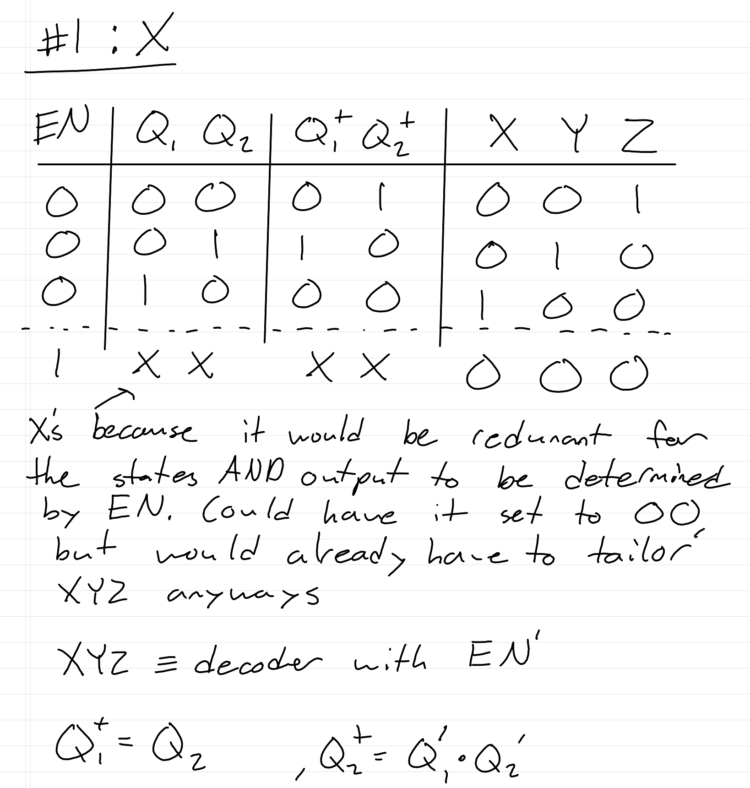
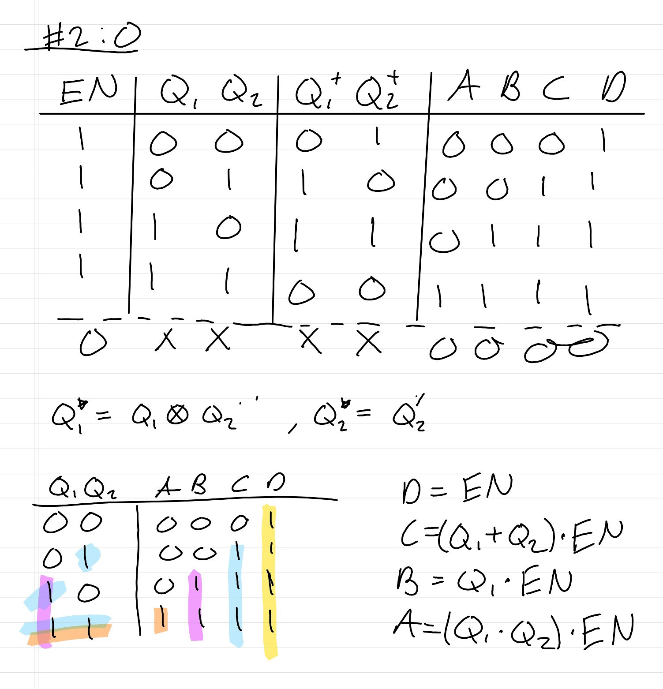
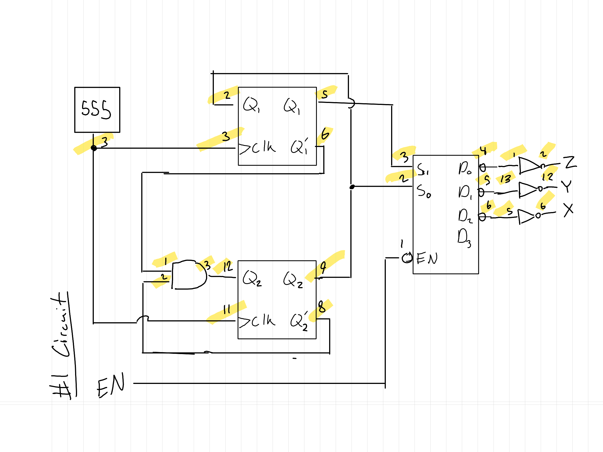
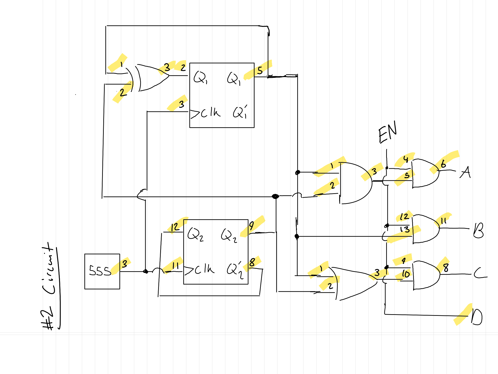

School Projects
ECE 212 — MIDI Tesla Coil
ECE 306 — IOT Enabled Autonomous Car
ECE 212 — LED State Machine Circuit
For our final project, we were tasked with designing and building two independent state machines controlling sequences of LEDs.
These state machines would be powered by a 555 timer, with an individual input to switch between the two. I decided to make a 3-state 'X' pattern
and a 4-state 'O' pattern. This is a video of me testing,
and this is the finished circuit.
   